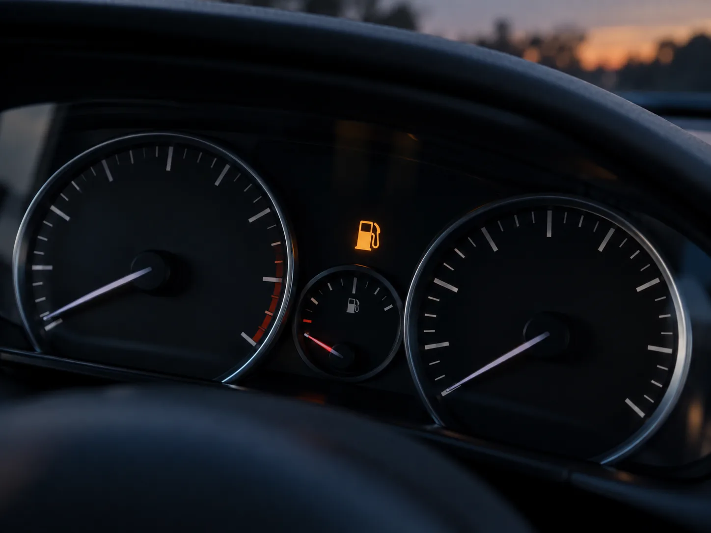
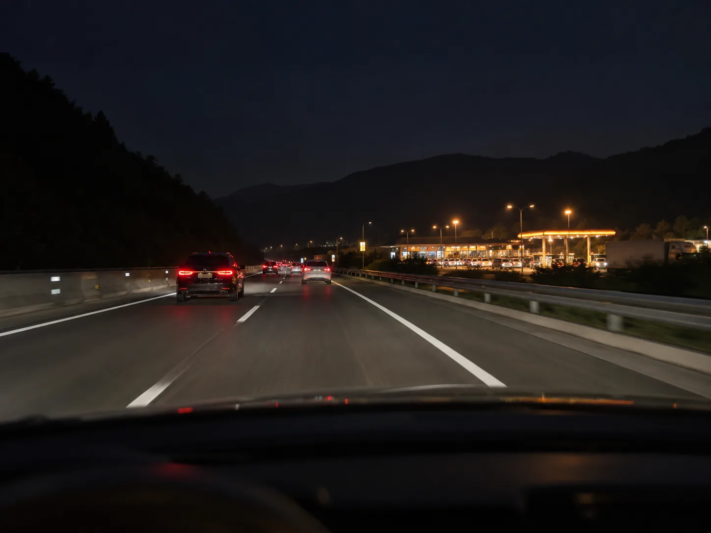
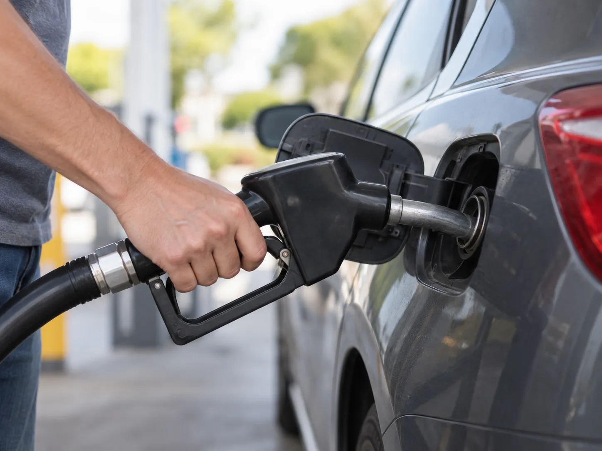
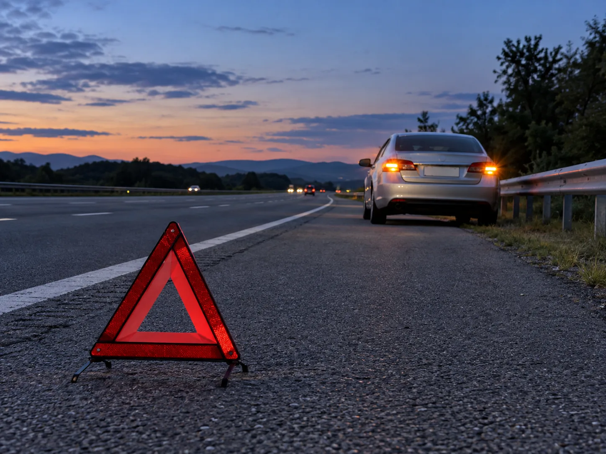
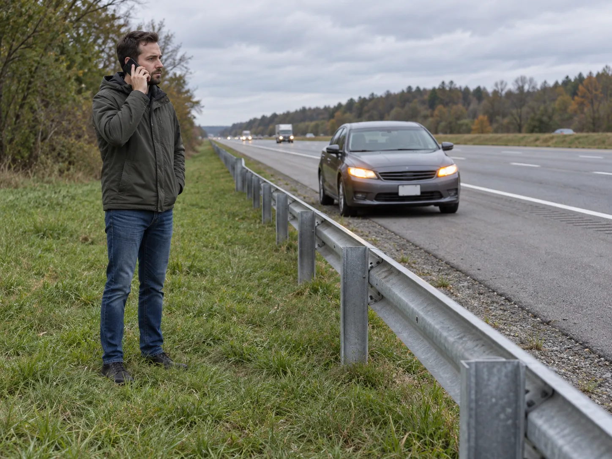

▲ 실제 촬영 사진이 아닌, 연료계 바늘이 바닥에 닿고 주황색 주유 경고등이 켜진 계기판을 형상화한 AI 생성 이미지다 이미지=AI 생성
계기판에 주황색 주유기 모양 경고등이 켜졌다고 해서 차가 곧바로 서지는 않는다. 제조사는 경고등이 켜지는 시점에 일정량의 연료를 남겨두도록 설계한다. 다만 그 양은 차종마다 다르고, 계기판에 뜨는 '주행가능거리' 숫자는 어디까지나 추정치다. 지금 할 일은 하나, 가장 가까운 주유소로 가는 것이다.
1. 지금 바로 할 일 — 순서대로
경고등을 본 순간부터 운전 방식을 '연료를 아끼는 모드'로 바꾸고, 목적지를 주유소로 바꾸면 된다. 동승자가 있다면 주유소 검색은 동승자에게 맡기자.
- 가장 가까운 주유소를 검색한다 — 내비게이션 앱의 '주유소' 검색으로 진행 방향 기준 가장 가까운 곳을 찾는다. 반대 방향으로 한참 돌아가야 하는 곳보다, 앞쪽의 가까운 곳이 낫다.
- 부드럽게, 일정한 속도로 달린다 — 급가속·급제동은 연료 소모를 늘린다. 고속도로라면 과속하지 말고 정속 주행을 유지한다.
- 불필요한 부하를 줄인다 — 에어컨·열선 등 전력과 동력을 쓰는 장치를 꼭 필요한 만큼만 쓴다.
- 주행가능거리 숫자를 목표로 삼지 않는다 — 숫자가 남아 있어도 주유소가 보이면 바로 들어간다.
- 주유소가 너무 멀다면 미리 도움을 요청한다 — 차가 완전히 서기 전에, 안전한 곳에 세운 뒤 보험사 긴급출동(비상급유)을 부르는 편이 훨씬 안전하다.

▲ 실제 촬영 사진이 아닌, 야간 고속도로에서 멀리 휴게소 주유소 불빛이 보이는 장면을 형상화한 AI 생성 이미지다 이미지=AI 생성
📍 고속도로 위에서 경고등이 켜졌다면
고속도로는 나들목·휴게소 사이 간격이 길어 '다음 주유소까지의 거리'를 먼저 확인해야 한다. 내비게이션에서 진행 방향의 다음 휴게소와 그 휴게소에 주유소가 있는지를 확인하고, 거리가 불안하다면 가까운 나들목으로 빠져 일반도로 주유소를 찾는 것도 방법이다. 휴게소 전에 연료가 떨어질 것 같다면 본선에서 멈추기 전에 졸음쉼터 등 안전한 곳에 세우고 보험사 긴급출동을 부르는 편이 낫다. 고속도로 본선이나 갓길에서 이미 멈췄다면 한국도로공사 콜센터 1588-2504로 무료 긴급견인을 요청할 수 있다(아래 4장 참고).
2. 경고등이 켜진 뒤 남은 거리 — 차종마다 다르다
경고등이 켜지는 시점의 남은 연료량은 차종마다 다르다. MBC 뉴스투데이는 대형차는 약 12리터, 중형차는 9~10리터, 소형차는 약 6리터가 남았을 때 경고등이 들어오고, LPG차는 가스가 10% 미만일 때 켜진다고 전했다. 남은 거리는 남은 연료 × 평균 연비로 대략 가늠할 수 있다. 예컨대 연비가 리터당 10km인 차에 10리터가 남았다면 이론상 약 100km다. 하지만 같은 보도는 속도와 무게에 따라 연비가 달라져 실제 거리는 이보다 짧을 수 있다고 덧붙였다.
해외 판매용 취급설명서에 남은 연료량을 명시한 차종을 몇 가지 추리면 다음과 같다. 반면 현대차 등 국산차 취급설명서는 대체로 "남은 연료량이 적을 때 켜진다"고만 적고 구체적인 리터 수는 밝히지 않는다.
| 차종(설명서 기준) | 경고등 점등 시 남은 연료 | 비고 |
|---|---|---|
| 쉐보레 아베오(2007) | 약 6.0리터(1.7갤런) | 북미판 취급설명서 |
| 쉐보레 옵트라(2006) | 약 7.5리터(2.0갤런) | 북미판 취급설명서 |
| 혼다 CR-V(2006~2011) | 약 8.6리터(2.3갤런) | 북미판 취급설명서 |
| 현대 싼타페(MX5, 2026) | 리터 수 미공개 | "남은 연료량이 적을 때 노란색으로 켜짐" |
📍 계기판 '주행가능거리'를 믿으면 안 되는 이유
쉐보레 트랙스 크로스오버 취급설명서는 주행가능거리를 "현재의 연료로 주행 가능한 대략적인 거리"라고 설명하며, 최근 운전 기록에 따른 평균 연비와 연료 탱크에 남은 연료량을 토대로 계산한다고 적고 있다. 즉 시내에서 연비 좋게 달리다 고속도로 오르막을 만나거나, 정체에 갇히면 실제 거리는 표시보다 줄어든다. 킥스(GS칼텍스) 블로그는 '0km'가 떠도 곧바로 멈추는 것은 아니며 차급과 도로 상황에 따라 대략 20~70km 여유가 있을 수 있다고 설명하지만, 이는 보장된 수치가 아니다.
3. 바닥까지 달리면 생기는 문제
제조사들은 경고등이 켜지면 즉시 주유하라고 한다. 현대차 취급설명서는 "연료가 완전히 소모된 상태로 주행하면 엔진 및 연료 장치가 고장 날 수 있다"고, 쉐보레 트랙스 크로스오버 설명서는 "연료 경고등이 점등된 상태로 계속 운행하면 배출가스 관련 장치가 손상될 수 있다"고 경고한다. 구체적으로 거론되는 문제는 다음과 같다.
| 부위 | 문제 |
|---|---|
| 연료펌프 | 탱크 안 연료펌프는 연료에 잠겨 냉각된다. 연료가 바닥나면 연료와 공기를 함께 빨아들여 발열이 커지고 수명이 줄 수 있다 |
| 필터·인젝터 | 탱크 바닥에 가라앉은 침전물이 빨려 올라가 필터나 인젝터를 막을 수 있다 |
| 디젤차 연료 계통 | 연료가 완전히 떨어지면 고압 연료 라인에 공기가 차는 '에어록'이 생길 수 있어, 주유만으로 시동이 안 걸리고 에어빼기 작업이 필요할 수 있다 |
| 배터리·시동모터 | 연료 없이 시동을 반복해 걸면 배터리와 시동모터에 무리가 간다(MBC 보도) |

▲ 실제 촬영 사진이 아닌, 주유 중인 손을 형상화한 AI 생성 이미지다. 경고등이 켜진 뒤에는 '가득'이 아니어도 일단 넣는 것이 먼저다 이미지=AI 생성
4. 결국 서버렸을 때 — 안전이 먼저, 그다음 급유·견인
연료가 떨어져 차가 서면 가장 위험한 것은 연료가 아니라 뒤에서 오는 차다. 매일신문 보도에 따르면 2024년 고속도로 2차사고 치사율은 44.3%로, 일반 교통사고 평균(10.1%)의 4.4배였다. 한국도로공사는 고속도로에서 차가 멈췄을 때의 행동요령을 '비트밖스'로 안내한다.
✅ 비트밖스 — 멈췄을 때 행동 순서
· 비상등을 켠다
· 트렁크를 열어 뒤차에 정차 중임을 알린다
· 밖으로 대피한다 — 고속도로라면 가드레일 밖 안전한 곳으로
· 스마트폰으로 신고한다 — 경찰(112), 한국도로공사(1588-2504), 보험사 긴급출동
도로교통법상 고장 등으로 운행할 수 없게 되면 고장자동차 표지(안전삼각대)를 설치해야 하고, 밤에는 사방 500m 지점에서 식별할 수 있는 적색 섬광신호·전기제등 또는 불꽃신호를 추가로 설치해야 한다(찾기쉬운 생활법령정보). 다만 차 뒤쪽으로 걸어가 삼각대를 세우는 일 자체가 위험할 수 있으니, 차량 통행이 많은 고속도로에서는 무리하지 말고 대피와 신고를 먼저 하자. 도로공사의 비트밖스 요령도 대피와 신고를 앞세운다.

▲ 실제 촬영 사진이 아닌, 갓길에 비상등을 켜고 선 차와 뒤쪽 안전삼각대를 형상화한 AI 생성 이미지다 이미지=AI 생성
안전하게 대피했다면 이제 연료 문제를 해결할 차례다. 자동차보험 긴급출동 특약에 가입했다면 '비상급유'를 부를 수 있다. 무료로 넣어주는 양과 횟수는 보험사·특약마다 다르므로 반드시 본인 보험사에 확인해야 한다.
| 보험사·특약 | 1회 급유량 | 횟수 | 비고 |
|---|---|---|---|
| 삼성화재 애니카서비스 특약 | 3리터 한도 | 보험기간 중 2회 | 휘발유·경유만. LPG·전기차는 10km 내 충전소까지 견인 |
| 삼성화재 애니카서비스 프리미엄 특약(2025년 5월 신설) | 5리터 | 보험기간 중 3회 | 스트레이트뉴스 보도 기준 |
| 현대해상 하이카서비스 특약 | 3리터 한도(1일 1회) | 보험기간 중 2회 | 휘발유·경유만, LPG차는 가까운 충전소까지 견인 |
3리터는 연비에 따라 대략 수십 km를 갈 수 있는 양으로, 가장 가까운 주유소까지 가기 위한 응급용이다. 한도를 넘는 양은 운전자가 비용을 낸다. 급유를 받은 뒤에는 곧바로 주유소로 가자.

▲ 실제 촬영 사진이 아닌, 차에서 내려 가드레일 밖으로 대피한 뒤 도움을 요청하는 모습을 형상화한 AI 생성 이미지다 이미지=AI 생성
📍 한국도로공사 2504 긴급견인 — 고속도로에서 멈췄다면 무료
한국도로공사는 고속도로 본선·갓길에 멈춘 차를 가장 가까운 휴게소·영업소·졸음쉼터 등 안전지대까지 무료로 옮겨주는 긴급견인 서비스를 24시간 운영한다. 대상은 승용차, 16인승 이하 승합차, 1.4톤 이하 화물차이며, 신청은 1588-2504. 위치를 설명할 때는 갓길에 약 200m 간격으로 선 기점표지판의 노선명·방향·거리를 읽어주면 된다(매일신문, 2026년 9월). 2차사고 예방을 위한 서비스인 만큼 스스로 움직일 수 있는 차는 대상이 아니며, 안전지대까지 옮겨진 뒤에는 보험사 비상급유 등으로 연료를 보충하면 된다.
비상급유 조건은 가입한 특약에 따라 다르다. 본인 보험사 앱이나 약관에서 남은 횟수를 확인해두자. 긴급출동 특약 예시(삼성화재) 보기
5. 하면 안 되는 것
⛔ 경고등이 켜진 뒤 피해야 할 행동
· 주행가능거리 숫자만 믿고 버티기 — 최근 평균 연비로 계산한 추정치라 도로 상황이 바뀌면 금세 줄어든다
· '0km'를 확인해보겠다며 달려보기 — 연료펌프 과열, 침전물 흡입, 디젤차 에어록 위험이 있다
· 고속도로 갓길에 선 차 안에 머물기 — 뒤차 추돌 위험이 크다. 비상등을 켜고 가드레일 밖으로 대피한다
· 차 뒤편 차로에 서서 손짓하거나 통화하기 — 신고는 안전한 곳으로 대피한 뒤에
· 연료 없이 시동을 계속 걸어보기 — 배터리와 시동모터에 무리를 준다
· 디젤차에 주유만 하고 억지로 시동 걸기 — 시동이 안 걸리면 정비 인력의 에어빼기가 필요할 수 있다
6. 전기차는 다르다
전기차는 배터리 잔량이 낮아지면 경고 표시가 뜨고, 완전히 방전되면 현장에서 '조금 넣어주는' 방식의 응급 조치가 어렵다. 그래서 보험사 긴급출동도 급유 대신 충전소까지 견인하는 방식이 기본이다(삼성화재 애니카서비스 특약은 10km 범위 내 충전소까지 견인, 초과분은 운전자 부담). 잔량 경고가 뜨면 가까운 충전소를 먼저 찾고, 냉난방 사용을 줄이며 부드럽게 달리는 것이 요령이다.
7. 요약 — 경고등은 '지금 주유소로'라는 신호
주유 경고등이 켜져도 곧바로 서지는 않는다. 대체로 소형차 약 6리터, 중형차 9~10리터, 대형차 약 12리터 안팎이 남지만, 정확한 양은 차종마다 다르고 계기판 주행가능거리는 최근 평균 연비로 계산한 추정치일 뿐이다.
할 일은 단순하다. 가장 가까운 주유소를 찾고, 급가속을 줄여 부드럽게 달리고, 멀다면 차가 서기 전에 안전한 곳에서 보험 비상급유를 부른다. 연료를 바닥까지 쓰면 연료펌프·필터가 상할 수 있고, 디젤차는 에어빼기가 필요할 수도 있다.
이미 섰다면 '비트밖스' — 비상등, 트렁크, 가드레일 밖 대피, 스마트폰 신고. 고속도로라면 한국도로공사 1588-2504로 가까운 안전지대까지 무료 견인을 받고, 보험사 비상급유(보통 1회 3리터·보험기간 중 2회, 특약별 상이)로 주유소까지 가면 된다.